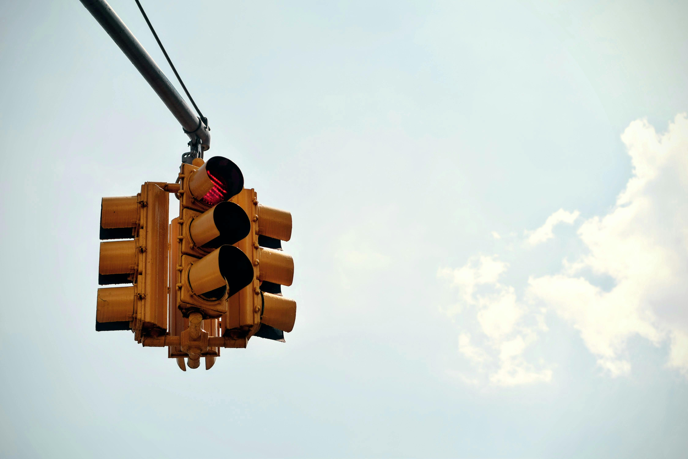
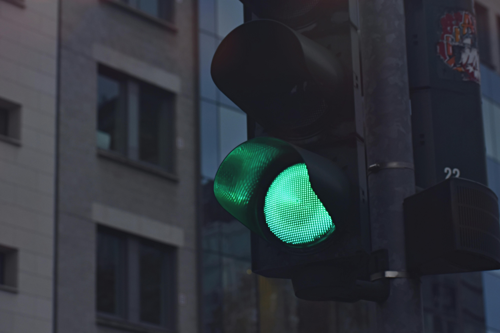
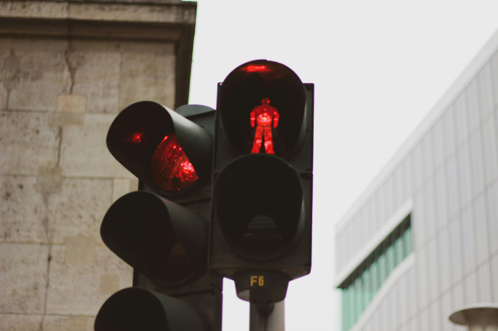

INVESTIGACIÓN
¿Cuáles son los diferentes tipos de semáforos?
- El semáforo peatonal.
- Semáforos reservados a determinados vehículos.
- Los semáforos inteligentes.
- Semáforos con cámara.
- Semáforo con amarillo intermitente.
- Semáforo para tranvía.
- Semáforos de carril.
- Semáforo ámbar como reductor de velocidad.
1-El semáforo peatonal.
Es el que tiene dibujado en su interior la silueta de un peatón y tiene 2 colores: verde y rojo; y dos tipos de posiciones: fija e intermitente: Luz verde fija: en forma de peatón en marcha. Indica a los peatones que pueden comenzar a atravesar la calzada. Luz roja fija: en forma de peatón inmóvil.
Estos semáforos tienen sensores que se encargan de detectar los flujos de tránsito, estos envían señales de manera remota a los semáforos para controlar la duración de los tiempos de cada luz, evitando la congestión e aliviando así el tránsito lo más posible.
2-Semáforos reservados a determinados vehículos.
Los semáforos son importantes en las ciudades porque permiten regular el flujo de vehículos y peatones en las vías, facilitando el orden y la seguridad de los habitantes.
El ciclo completo de cambio de luces en un semáforo generalmente consta de tres fases: rojo, ámbar y verde. El tiempo en cada fase puede ajustarse para adaptarse a las necesidades del tráfico local. Fase roja: Como mencionamos anteriormente, la fase roja suele tener una duración aproximada de 60 segundos.

3-Los semáforos inteligentes.
Por medio de cámaras, sensores o GPS, el semáforo inteligente puede detectar el número, la distancia y la velocidad de los vehículos y peatones que se acercan o esperan en el cruce. Así, puede variar el tiempo de duración de las luces roja, amarilla y verde según la densidad y el flujo del tráfico.Cada intersección tendrá sensores y cámaras que permitirán que el sistema, a través de unos algoritmos, calcule la cantidad de vehículos que hay en cada semáforo y, automáticamente, ajuste los tiempos de luces rojas y verdes para así evitar congestiones
4-Semáforos con cámara.
Los semáforos con cámara tienen como objetivo sancionar a aquellos conductores que se salten el disco cuando éste se encuentra en color rojo. No se trata de algo nuevo, los semáforos foto-rojo como también se les conoce pueden sancionar con una multa económica y con la retirada de puntos del carnet de conducir.El sistema de cámaras actúa a través de dos fotografías: La primera se toma antes de que el vehículo llegue a la línea de detención cuando el semáforo está en rojo. La segunda, cuando se ha atravesado esta línea sin que el color haya cambiado a verde.
5-Semáforo con amarillo intermitente.
Luz amarilla intermitente o dos luces amarillas intermitentes alternativamente: no prohíben el paso, pero exigen a los conductores extremar su precaución, ya que no eximen del cumplimiento de otras señales verticales que obliguen a detenerse o ceder el paso, o, en su ausencia, de obedecer las reglas generales .

6-Semáforos para tranvías.
Los semáforos de los tranvías tienen tres tipos de señales: un triángulo fijo, parpadeante o apagado, una franja horizontal y otra vertical. Si el triángulo está verde, al igual que en los discos tradicionales, el vehículo puede pasar. Si está parpadeando, debe prestar atención y reducir la velocidad.
7-Semáforos de carril.
Los semáforos cuadrados también se conocen como de carril, ya que únicamente afectan a los vehículos que se desplazan por dicha zona. Pueden presentar los siguientes formatos: Luz roja en forma de equis: significa que los coches no pueden ocupar el carril y deben abandonarlo.
8-Semáforo ámbar como reductor de velocidad.
Concretamente se ponen en zonas limitadas a velocidad urbana, pero en las que los vehículos suelen ir demasiado rápido.